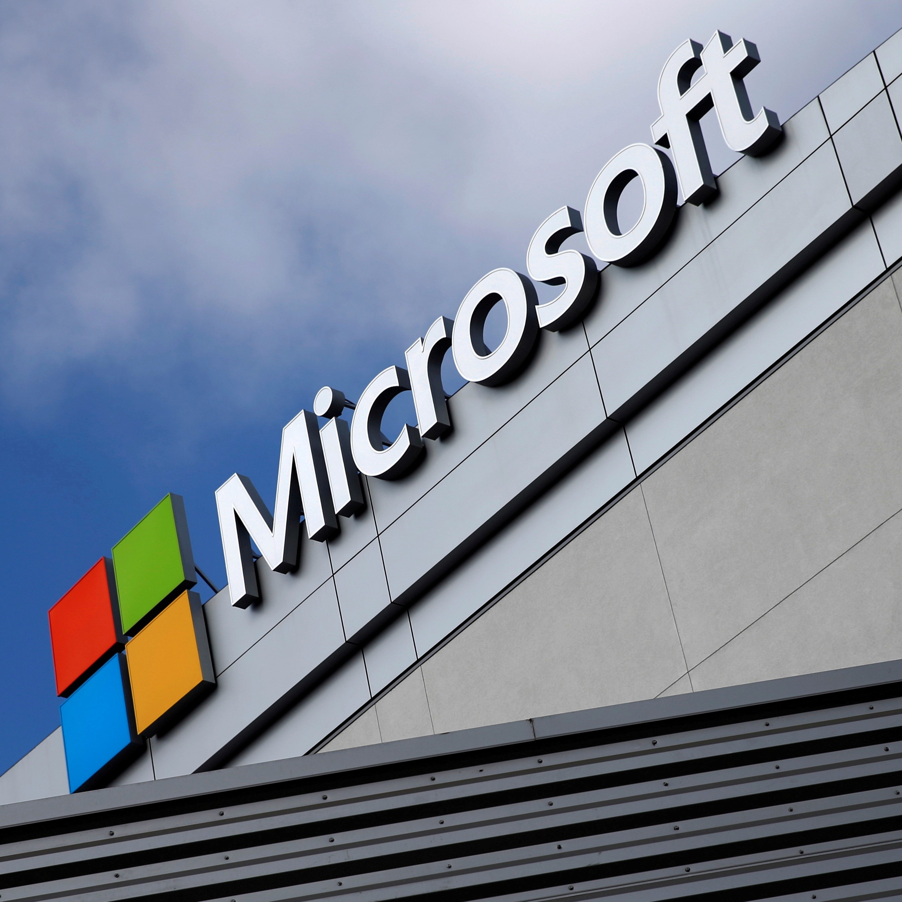

By: David Ortega
Microsoft Windows, a computer operating system developed by Microsoft Corporation, has undergone nine major versions since its 1985 inception. Starting with Windows 1, which introduced a graphical user interface (GUI) with mouse support, subsequent versions like Windows 2 (1987) brought overlapping windows, and Windows 3 (1990) achieved widespread success with multitasking and 256 colors. Windows 95 (1995) featured the Start button and "plug and play," while Windows XP (2001) unified consumer and enterprise elements. Windows 7 (2009) addressed issues, and Windows 8 (2012) introduced a touch-friendly interface. Windows 10 (2015) aimed for platform unification, featuring a Start menu and regular updates, marking Microsoft's decision to end large-scale revisions. Running on about 90% of PCs, Windows has evolved from a GUI extension of MS-DOS to a dominant force in the PC market, offering improved functionality and interface enhancements across its various iterations.
Sources:
- "From windows 1 to Windows 10: 29 years of windows evolution"- The Guardina.
- "Microsoft windows"Encyclopedia Britannica